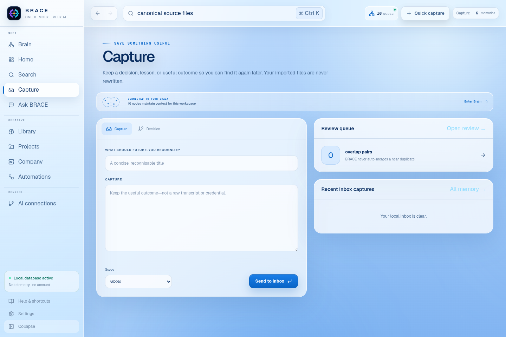
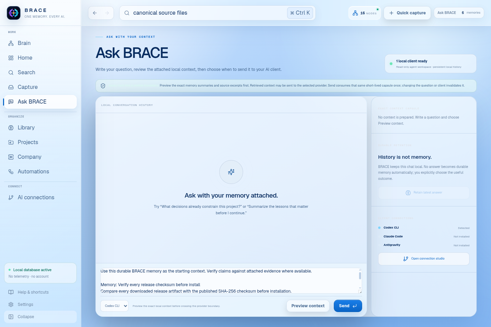
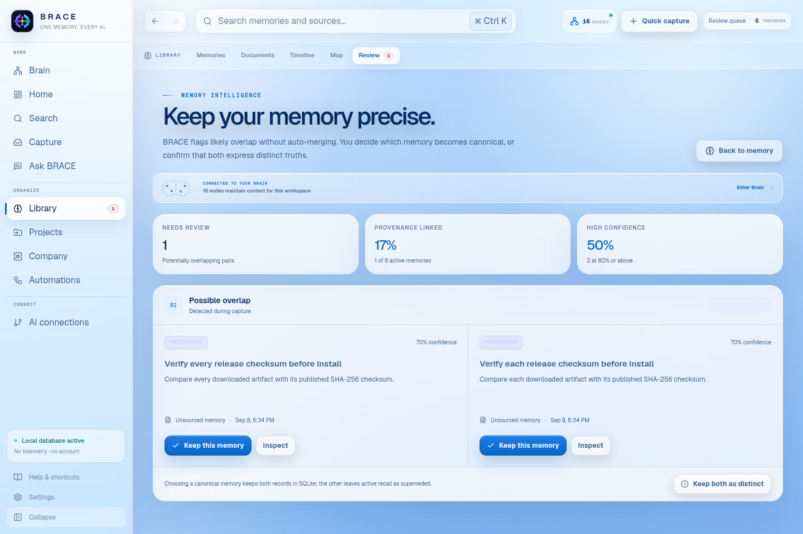
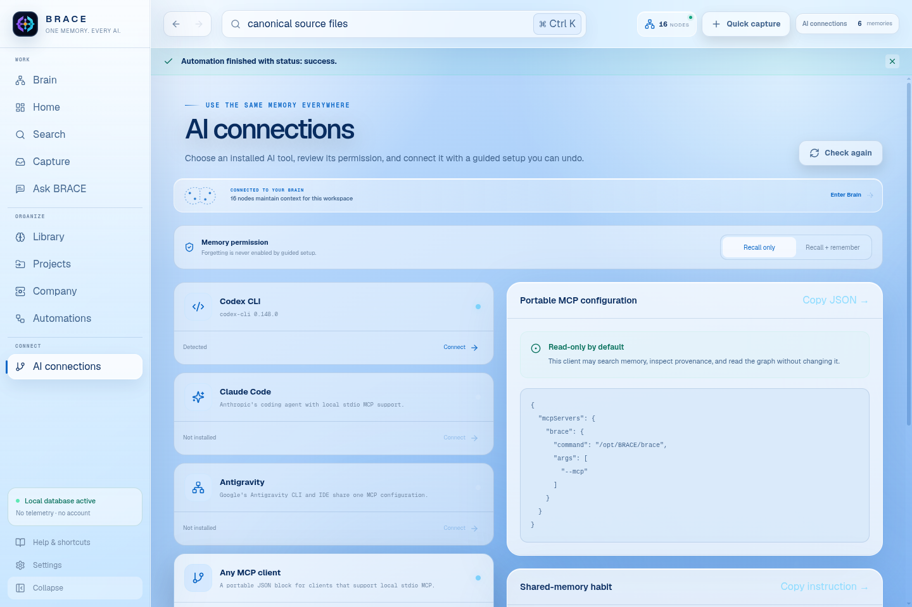

INSTALL
Choose the package for your computer.
Open the BRACE 0.7.0 GitHub release and download one asset. You do not need the source code unless you want to develop BRACE.
Windows 10 or 11
- Download
BRACE-Setup-0.7.0.exe. - Open the installer and choose an install location.
- Launch BRACE from the Start menu.
Preview limitation: the first community build is not code-signed. Windows may show a SmartScreen warning. Verify the SHA-256 value in the release notes before choosing Run anyway.
Linux
For Debian or Ubuntu, download the amd64.deb package and run:
sudo apt install ./brace-brain_0.7.0_amd64.debFor other distributions, download the AppImage:
chmod +x BRACE-0.7.0.AppImage
./BRACE-0.7.0.AppImageBuild from source instead
BRACE currently requires Node.js 24 or newer. Clone the repository, install exact dependencies, run the checks, then start desktop development:
git clone https://github.com/GYASH28/B.R.A.C.E-brain.git
cd B.R.A.C.E-brain
npm ci
npm test
npm run electron:devFIRST RUN
Start empty or explore the synthetic demo.
A new installation has no personal memory and no imported files. BRACE offers two explicit choices:
- Import a projectChoose a specific folder you own. BRACE indexes supported text but never changes the originals.
- Explore synthetic demoLoad the fictional Northstar workspace to try recall, decisions, the graph, timeline, and bundled skills.

PROJECT CONTEXT
Import one focused project folder.
Choose the smallest folder that contains the work you want to recall. A project repository or notes folder is a good boundary. Your home directory or drive root is not.
Indexing is incremental. Use Reindex after meaningful file changes. Removed source files are removed from the index; durable memories remain until you forget or supersede them.

MEMORY
Remember deliberately, then recall with evidence.
Use Quick capture or Inbox for context that should survive a project or conversation: decisions, lessons, warnings, preferences, facts, hypotheses, summaries, and procedures. Keep each memory focused on one claim.
Ctrl / ⌘ KCommand paletteJump to any workspace without hunting through navigation.
Ctrl / ⌘ NQuick captureSave a durable memory from whatever view you are using.
1 to 9Direct navigationOpen Command center through Skills in sidebar order.
?Keyboard mapOpen the complete shortcut reference.
- 1Name the durable point.
Use a specific title such as “Keep imported files canonical,” not “Architecture notes.”
- 2Choose its scope.
Use global memory only when it applies everywhere. Otherwise keep it within a project scope.
- 3Attach provenance when available.
A source URI and excerpt let future retrieval show why the memory exists.
- 4Search your memory.
Open Search, then choose Today, 7 days, 30 days, or All time. BRACE reports lexical, semantic, or hybrid mode and keeps memories separate from source evidence.


Semantic retrieval is optional. In Settings, enable a loopback Ollama endpoint and choose an embedding model. If the provider is unavailable, BRACE completes lexical search and reports the fallback.
AUTOMATE + STRUCTURE
Let local memory maintain itself—visibly.
Search answers a question. These workspace views show how that answer stays precise, reaches an AI, and fits into the larger history. Every view reads the same local database.

Start from a template or create a recipe with one typed trigger, optional AND/OR conditions, and bounded actions. New recipes start paused: inspect the permission envelope, run Preview, then enable only when its trace is correct. The desktop app must remain open for schedules.

Ask through a detected Codex CLI or Claude Code client. BRACE retrieves a bounded context capsule locally, previews the provider boundary, and keeps conversation history separate from durable memory until you choose Retain latest answer.

Open Memory, then Review queue, when BRACE flags likely overlap. Inspect both records, keep either one as canonical, or confirm that both are distinct. BRACE never silently merges them.

Open Timeline to review dated memory, evidence, indexing, and decision events. Choose Record decision to capture the decision, rationale, project scope, and accepted status explicitly.

Open Library → Map and move the same graph through Rings, Living, Orbit, Flow, or Chronicle. Filter by type, select a node, or use the arrow keys to inspect typed relationships and travel back to provenance.

Open Skills, choose Install manifest, and select one brace-skill.json. Review the exact permission list. Third-party skills install disabled; use the switch only after the checksum and permissions are acceptable.
Automations and Skills are declarative. They can invoke only approved memory operations. BRACE does not run arbitrary JavaScript, shell commands, HTTP calls, or code from a recipe or manifest.
MCP CONNECTION
Connect an AI with explicit memory permission.
Open Connections inside BRACE. The connection studio detects Codex CLI, Claude Code, and Antigravity, shows their installed version, and gives every client the same local BRACE memory.
- 1Choose a permission.
Start with Recall only. Choose Recall + remember only when that client should retain explicit durable outcomes.
- 2Select a detected client.
Choose Codex CLI, Claude Code, or Antigravity and press Connect. BRACE previews the provider boundary and creates a recoverable configuration backup before changing anything.
- 3Start with memory.
The client can call
brace_session_startbefore work andbrace_session_handoffafter work when retention is enabled.

For another MCP-compatible tool, choose Any MCP client and copy the generated JSON. Linux uses the compact --mcp form shown below. Windows uses the bundled server in Electron Node mode so redirected stdio remains reliable.
{
"mcpServers": {
"brace": {
"command": "<path-to-BRACE-executable>",
"args": ["--mcp"]
}
}
}Restart a manually configured client, then ask it to call brace_status or brace_session_start. The default connection can read recall, projects, timeline, graph, and skill metadata.
Start read-only. Enable writes only for a client you trust. Destructive access is intentionally a second, separate flag.
LOCAL CONTROL
Back up, export, forget, or delete.
The Settings screen is the control room for your local data. BRACE exposes four different operations because they have different safety and portability properties.
- Create SQLite backup
- Makes a consistent copy of the complete local database. Use this for disaster recovery.
- Export portable JSON
- Exports memory, decisions, evidence, graph relationships, skills metadata, and settings without machine-specific project roots.
- Forget one memory
- Removes its content, evidence, and vector. A non-sensitive tombstone remains for audit integrity.
- Delete all local data
- Requires typing
DELETE. Imported project originals remain untouched.
Default data locations
Windows%APPDATA%\BRACE\brace.sqlite3
Linux$XDG_DATA_HOME/brace/brace.sqlite3or ~/.local/share/brace/brace.sqlite3
OverrideBRACE_DATA_DIRUse a specific directory, never a drive root.
Backups are sensitive. They contain the memories you chose to store. Keep them in encrypted storage and do not commit them to Git.
TROUBLESHOOTING
Common first-run questions.
What is getting in your way?
Choose the closest symptom. This stays entirely in your browser.
Why does Search say “lexical”?
That is the private default and it is fully functional. Enable a local Ollama embedding model only if you want semantic or hybrid ranking.
Why is an imported file missing?
BRACE rejects binary, oversized, hidden, credential-like, database, dependency, build, cache, and symlink content. Check that the file is supported and inside the selected folder.
Why can my AI search but not remember?
MCP is read-only by default. Add BRACE_MCP_WRITE=1 to that client's BRACE server environment, then restart the client.
Can I use a cloud embedding endpoint?
The core adapter permits HTTPS endpoints, but the desktop first-run interface intentionally exposes local Ollama only. Remote embedding configuration is an advanced source-level option and sends indexed text to that provider.
Where can I report a problem?
Check the full troubleshooting guide, then open a GitHub issue without attaching your database, project files, logs containing paths, or private exports.